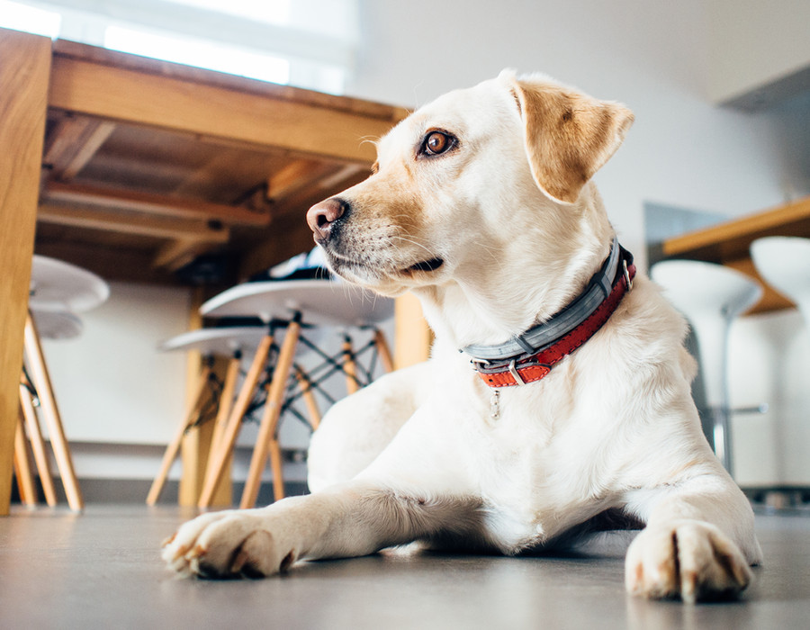

Únete a Grupo Nebak
Creemos en un mundo donde la vida de los animales son respetadas, y ellos pueden ser libres de la crueldad y el sufrimiento. Nuestro trabajo reúne a la gente para crear los cambios necesarios para proteger a los animales.
Acerca de
Somos una Organización de adopción de animales y control de colonias de gatos dedicada desde el año 2018, en Grupo Nebak hemos descubiertos innumerables maneras de marcar la diferencia en la vida y el bienestar de los animales. En un mundo ideal, cada ser humano sería lo suficientemente compasivo como para echar una mano. Desde el tiempo de voluntariado y hacer una donación, hasta mantenerse informado y abogar en línea, hay muchas maneras de involucrarse. Entérate hoy mismo.
Más información
Eventos
Contáctanos
Escríbenos
nebakadopciones@gmail.com
625 140 588 / 600 042 594 / 659 487 771
Dirección
Calle Santiago 27 1º izq
20304 Irún, Gipuzkoa, España